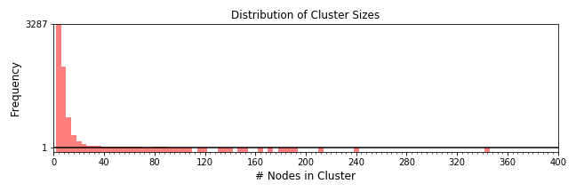
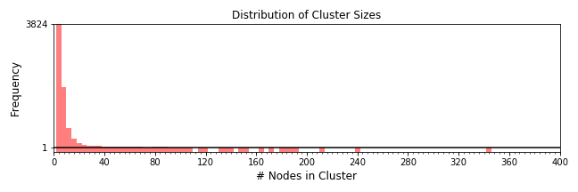
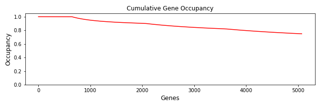
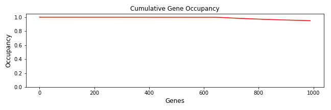

id AgalmaExampleTree
|
Run 10 homologize 2017-02-08T16:41:27.521839 node1001 |
Wall Time (s) : 6274.77 User Time (s) : 97932.70 System Time (s) : 111.43 Max Memory (KB) : 722,800 |
|
|
Run 11 multalign 2017-02-08T18:26:03.786641 node1001 |
Wall Time (s) : 4972.94 User Time (s) : 10752.37 System Time (s) : 4346.20 Max Memory (KB) : 11,783,580 |
|
|
Run 12 genetree 2017-02-08T19:49:10.228527 node1001 |
Wall Time (s) : 2466.55 User Time (s) : 39073.42 System Time (s) : 72.01 Max Memory (KB) : 169,032 |
|
|
Run 13 treeinform 2017-02-08T22:40:03.232881 node1011 |
|
Wall Time (s) : 37.30 User Time (s) : 19.15 System Time (s) : 0.96 Max Memory (KB) : 480,380 |
|
Run 14 homologize 2017-02-08T22:40:41.855916 node1011 |
Wall Time (s) : 5941.68 User Time (s) : 91840.83 System Time (s) : 104.99 Max Memory (KB) : 722,968 |
|
|
Run 15 multalign 2017-02-09T00:19:45.571462 node1011 |
Wall Time (s) : 4985.49 User Time (s) : 10412.35 System Time (s) : 4213.67 Max Memory (KB) : 11,621,164 |
|
|
Run 16 genetree 2017-02-09T01:43:08.444965 node1011 |
Wall Time (s) : 1971.99 User Time (s) : 31165.64 System Time (s) : 69.93 Max Memory (KB) : 166,132 |
|
|
Run 17 treeprune 2017-02-09T02:17:01.100104 node934 |
Wall Time (s) : 69.60 User Time (s) : 67.79 System Time (s) : 1.51 Max Memory (KB) : 1,471,804 |
|
|
Run 18 multalign 2017-02-09T02:18:14.340861 node934 |
Wall Time (s) : 2755.16 User Time (s) : 1472.22 System Time (s) : 3014.64 Max Memory (KB) : 2,361,908 |
|
|
Run 19 supermatrix 2017-02-09T03:04:18.886223 node934 |
Wall Time (s) : 3.65 User Time (s) : 3.91 System Time (s) : 0.64 Max Memory (KB) : 243,992 |
|
|
Run 20 supermatrix 2017-02-09T03:04:24.410872 node934 |
Wall Time (s) : 3.36 User Time (s) : 3.73 System Time (s) : 0.43 Max Memory (KB) : 199,856 |
|
|
Run 21 speciestree 2017-02-09T03:04:28.824153 node934 |
Wall Time (s) : 1846.15 User Time (s) : 36873.25 System Time (s) : 6.83 Max Memory (KB) : 685,584 |
Identifies homologous sequences across datasets. Takes assembly or group of assemblies and prepares a set of comprehensive comparisons between them. First an all by all BLAST is run with a stringent threshold, and the hits which match above a given score are used as edges between two transcripts which then form a graph. This graph is the basis of a series of comparative scores.
Total sequences: 111348
Summary of all species processed.
Distribution of the number of nodes in each cluster.
| Wall Time (s) | User Time (s) | System Time (s) | Max Memory (KB) | 6244.60 [sum] | 97898.98 [sum] | 110.30 [sum] | 357,120 [max] |
|---|
| Command | Stage | Wall Time (s) | User Time (s) | System Time (s) | Max Memory (KB) |
|---|---|---|---|---|---|
| makeblastdb | prepare_blast | 11.14 | 5.62 | 5.37 | 354,660 |
| parallel | run_blast | 6200.78 | 97878.95 | 64.40 | 354,908 |
| mcxload | parse_edges | 25.38 | 1.48 | 0.07 | 357,120 |
| mcl | mcl_cluster | 7.30 | 12.94 | 40.47 | 355,640 |
Applies sampling and length filters to each cluster of homologous sequences.
Creates multiple sequence alignments for each cluster of homologous sequences using MAFFT using the E-INS-i algorithm; see doi: 10.1093/molbev/mst010.
Cleans up alignments using Gblocks.
| Wall Time (s) | User Time (s) | System Time (s) | Max Memory (KB) | 4923.36 [sum] | 10737.93 [sum] | 4343.23 [sum] | 11,472,140 [max] |
|---|
| Command | Stage | Wall Time (s) | User Time (s) | System Time (s) | Max Memory (KB) |
|---|---|---|---|---|---|
| parallel | align_sequences | 4899.48 | 10709.32 | 4288.21 | 11,472,140 |
| parallel | cleanup_alignments | 23.88 | 28.60 | 55.03 | 290,344 |
Builds gene trees for each alignment of homologous sequences, it builds a phylogenetic tree using the maximum likelihood optimality criterion as implemented in RAxML (see http://www.exelixis-lab.org/ and doi:10.1093/bioinformatics/btl446).
Use --previous for a specific set of alignments, otherwise this pipeline will search for the output from the most recent run of multalign for the given catalog ID.
| Wall Time (s) | User Time (s) | System Time (s) | Max Memory (KB) | 2455.20 [sum] | 39071.36 [sum] | 70.05 [sum] | 80,796 [max] |
|---|
| Command | Stage | Wall Time (s) | User Time (s) | System Time (s) | Max Memory (KB) |
|---|---|---|---|---|---|
| parallel | genetrees | 2455.20 | 39071.36 | 70.05 | 80,796 |
Identifies homologous sequences across datasets. Takes assembly or group of assemblies and prepares a set of comprehensive comparisons between them. First an all by all BLAST is run with a stringent threshold, and the hits which match above a given score are used as edges between two transcripts which then form a graph. This graph is the basis of a series of comparative scores.
Total sequences: 107067
Summary of all species processed.
Distribution of the number of nodes in each cluster.
| Wall Time (s) | User Time (s) | System Time (s) | Max Memory (KB) | 5911.53 [sum] | 91808.42 [sum] | 104.10 [sum] | 356,888 [max] |
|---|
| Command | Stage | Wall Time (s) | User Time (s) | System Time (s) | Max Memory (KB) |
|---|---|---|---|---|---|
| makeblastdb | prepare_blast | 10.86 | 5.37 | 5.37 | 355,944 |
| parallel | run_blast | 5869.33 | 91789.30 | 60.81 | 356,192 |
| mcxload | parse_edges | 24.45 | 1.39 | 0.07 | 356,344 |
| mcl | mcl_cluster | 6.89 | 12.36 | 37.84 | 356,888 |
Applies sampling and length filters to each cluster of homologous sequences.
Creates multiple sequence alignments for each cluster of homologous sequences using MAFFT using the E-INS-i algorithm; see doi: 10.1093/molbev/mst010.
Cleans up alignments using Gblocks.
| Wall Time (s) | User Time (s) | System Time (s) | Max Memory (KB) | 4931.80 [sum] | 10398.97 [sum] | 4210.70 [sum] | 11,310,684 [max] |
|---|
| Command | Stage | Wall Time (s) | User Time (s) | System Time (s) | Max Memory (KB) |
|---|---|---|---|---|---|
| parallel | align_sequences | 4912.36 | 10371.18 | 4157.15 | 11,310,684 |
| parallel | cleanup_alignments | 19.44 | 27.80 | 53.55 | 290,496 |
Builds gene trees for each alignment of homologous sequences, it builds a phylogenetic tree using the maximum likelihood optimality criterion as implemented in RAxML (see http://www.exelixis-lab.org/ and doi:10.1093/bioinformatics/btl446).
Use --previous for a specific set of alignments, otherwise this pipeline will search for the output from the most recent run of multalign for the given catalog ID.
| Wall Time (s) | User Time (s) | System Time (s) | Max Memory (KB) | 1960.22 [sum] | 31163.67 [sum] | 67.92 [sum] | 79,516 [max] |
|---|
| Command | Stage | Wall Time (s) | User Time (s) | System Time (s) | Max Memory (KB) |
|---|---|---|---|---|---|
| parallel | genetrees | 1960.22 | 31163.67 | 67.92 | 79,516 |
For each gene tree generated in genetree, prune the tree to include only one representative sequence per taxon when sequences form a monophyletic group (here called 'monophyly masking'). Then prune the monophyly-masked tree into maximally inclusive subtrees with no more than one sequence per taxon (here called 'paralogy pruning').
Use --previous for a specific set of trees, otherwise this pipeline will search for the output from the most recent run of genetree for the given catalog ID.
| Cluster Size | Frequency |
| 3 | 1094 |
| 4 | 1467 |
| 5 | 1567 |
| 6 | 1406 |
| 7 | 644 |
Distribution of the number of orthologs in each gene cluster.
| Threshold | # Clusters | % Missing Genes |
| 3 | 6178 | 30.8% |
| 4 | 5084 | 25.1% |
| 5 | 3617 | 17.9% |
| 6 | 2050 | 9.8% |
| 7 | 644 | 0.0% |
Applies sampling and length filters to each cluster of homologous sequences.
Creates multiple sequence alignments for each cluster of homologous sequences using MAFFT using the E-INS-i algorithm; see doi: 10.1093/molbev/mst010.
Cleans up alignments using Gblocks.
| Wall Time (s) | User Time (s) | System Time (s) | Max Memory (KB) | 2712.44 [sum] | 1462.28 [sum] | 3011.98 [sum] | 2,076,256 [max] |
|---|
| Command | Stage | Wall Time (s) | User Time (s) | System Time (s) | Max Memory (KB) |
|---|---|---|---|---|---|
| parallel | align_sequences | 2695.22 | 1442.27 | 2960.18 | 2,076,256 |
| parallel | cleanup_alignments | 17.22 | 20.01 | 51.80 | 269,420 |
Concatenates alignments of orhologous sequences to create a supermatrix. It also creates a supermatrix with a given proportion of gene occupancy.
| Sequence type | aa |
| Target gene occupancy | 100.0% |
| Actual gene occupancy | 74.9% |
| Number of genes | 5,071 |
| Number of columns | 1,762,759 |
Image of the gene occupancy in the supermatrix, ordered by most complete taxa, then most complete gene. Black indicates the gene is present, white that it is absent.
Plot of gene occupancies for cumulatively larger subsets of genes in the supermatrix, ordered by most complete gene.
| Species | Number of genes | Percent |
| Agalma_elegans | 4498 | 88.7% |
| Nanomia_bijuga | 4255 | 83.9% |
| Craseoa_lathetica | 4172 | 82.3% |
| Hydra_magnipapillata | 3844 | 75.8% |
| Abylopsis_tetragona | 3623 | 71.4% |
| Physalia_physalis | 3312 | 65.3% |
| Nematostella_vectensis | 2876 | 56.7% |
Back to TOCNumber and percent of genes per taxon in supermatrix.
Concatenates alignments of orhologous sequences to create a supermatrix. It also creates a supermatrix with a given proportion of gene occupancy.
| Sequence type | aa |
| Target gene occupancy | 95.0% |
| Actual gene occupancy | 95.0% |
| Number of genes | 989 |
| Number of columns | 373,730 |
Image of the gene occupancy in the supermatrix, ordered by most complete taxa, then most complete gene. Black indicates the gene is present, white that it is absent.
Plot of gene occupancies for cumulatively larger subsets of genes in the supermatrix, ordered by most complete gene.
| Species | Number of genes | Percent |
| Agalma_elegans | 980 | 99.1% |
| Nanomia_bijuga | 985 | 99.6% |
| Craseoa_lathetica | 980 | 99.1% |
| Hydra_magnipapillata | 980 | 99.1% |
| Abylopsis_tetragona | 735 | 74.3% |
| Physalia_physalis | 948 | 95.9% |
| Nematostella_vectensis | 969 | 98.0% |
Back to TOCNumber and percent of genes per taxon in supermatrix.
Builds a species tree from a supermatrix.
(((((Craseoa_lathetica:0.07418923182691430918,Abylopsis_tetragona:0.16772386243023812424)100:0.06036465795666499934,(Agalma_elegans:0.06274253674624589994,Nanomia_bijuga:0.10587937657822119042)100:0.06144479586857096859)100:0.05547080388864688433,Physalia_physalis:0.14972242108465486088)100:0.12918114863769267209,Hydra_magnipapillata:0.31719632445317125224):0.35361922261528849765,Nematostella_vectensis:0.35361922261528849765);
Maximum-likelihood tree for the supermatrix.
| Wall Time (s) | User Time (s) | System Time (s) | Max Memory (KB) | 1845.96 [sum] | 36872.65 [sum] | 6.49 [sum] | 596,108 [max] |
|---|
| Command | Stage | Wall Time (s) | User Time (s) | System Time (s) | Max Memory (KB) |
|---|---|---|---|---|---|
| raxml-pthreads | speciestree | 1845.96 | 36872.65 | 6.49 | 596,108 |